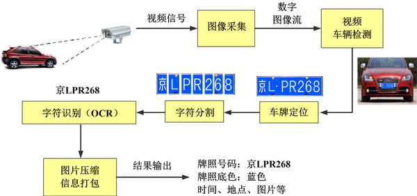

应用综述¶
一. 基本原理：¶
光学字符识别（Optical Character Recognition, OCR）是指利用光学字符识别技术,对文本资料的图像文件进行分析识别处理，获取可编辑的文字及版面信息的过程。
车牌识别为例：
上图为车牌识别流程示意图
预处理：噪声过滤、自动白平衡、自动曝光以及伽马校对、边缘增强、对比度调整等。车牌定位：对图像预处理后的灰度图像上进行扫描处理，判定车牌区域。字符切开：对图像进行灰度化道闸和二值化等处理，判定位字符区域，然后依据字符尺度特征进行字符切开。字符识别：对切开后的字符进行缩放、特征提取，与字符数据库模板中的标准字符表达形式进行匹配区别。效果输出：将车牌识别后的结果以文本格式输出。
二. 应用场景：¶
特定场景识别：专用OCR识别功能，如，证件识别、车牌识别、发票识别和银行卡识别。
通用场景识别：可用于更复杂的自然场景，在移动端也具有更大的应用潜力。
上图为自然场景中出现的字符识别
自然场景识别难点：
多种语言文本：文字可以有不同的大小、字体、颜色、亮度、对比度等。文本行可能有横向、竖向、弯曲、旋转、扭曲等式样。文字形态复杂：文字可能出现产生变形(透视、仿射变换)、残缺、模糊等现象。背景多样：文字可能出现在平面、曲面或折皱面上等同质干扰：文字附近有复杂的干扰纹理或者非文字区域有近似文字的纹理，比如沙地、草丛、栅栏、砖墙等。